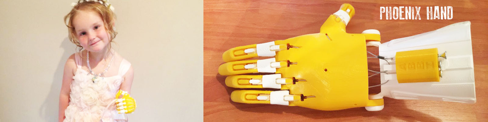
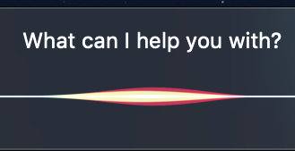
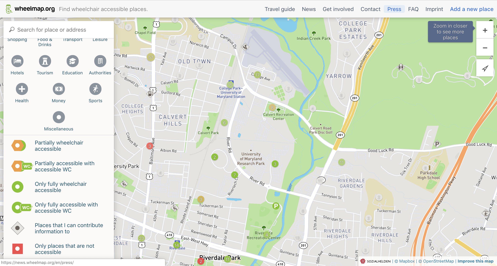

Technology - Transforming Lives of People with Disabilities
Disability in the US is prevalent in 12.8% of the population of all ages.
human element text 1
Introduction
Accessibility is a measure of how usable a computing device or software is for all users, including users with disabilities. Accessibility is defined as the quality of being able to be reached or entered, easy to obtain or use, easily understood or appreciated. Accessibility is not optional, but it is the law, since accessibility is the “ability” to “access” which is why it so important. It is designing the world to include everyone, regardless of disability, so that others have access to more of life because it matters.
What is Accessibility?
According to Assistive Technology Industry Association, Assistive Technology is any product, equipment, or system that is used to increase, maintain, or improve the functional capabilities of individuals with disabilities. Some categories of assistive technology are:
- Computer Access Aids
- Communication Aids
- Aids for Vision and Reasoning
- Aids for Hearing and Listening
The Center on Technology and Disability mentions three levels of Assistive Technology devices:
- High: Computerized or complex electronic aids that might require training like voice activated mobile devices or computer access software to operate them.
- Medium: Simple electronic features like closed caption televisions, and talking spell checkers.
- Low: They do not have any complex or mechanical features: pencil grips, handheld magnifiers, canes/walkers.
Some of the examples of such technologies that exist today are:
- Braille Keyboard: A keyboard designed for individuals who are blind or have low vision to type and enter instructions to the computer in Braille.
- The Enable Community: An online platform that connects people with a need of prosthetics to volunteers who make use of 3D printing technology to customize it for free. 
- Smart Speakers: It uses specialized software to transform the text into a computer generated voice and is helpful to the visually impaired.
- A Microphone: In this technology, the person’s speech is converted into text or other action using software. It is useful for the people who find it difficult to operate a keyboard or a mouse. 
- The Sesame Phone: It is the world’s first completely touch-free smartphone, designed by and for people with disabilities. It makes use of their head movement through the built-in front-facing camera on the phone. The app, Open Sesame, has been nominated the Best Accessibility Experience award on Google Play!
- Project Ray Smartphone: It is a smartphone designed for the blind that is controlled via touch, voice and sound controls with an aim to bridge the technological gap and provide all the benefits of the smartphone to the visually impaired.
- Wheelmap: An online worldwide map that allows users to share and access information of places that are wheelchair accessible developed by German non-profit organisation Sozialhelden e.V. 
- Orcam: An Artificial Intelligence assistive reading device that helps blind, visually impaired, and people with reading difficulties by providing a description of text and objects to its wearer and creating artificial vision via a bone-conduction earpiece.

Source: Hooleon
Source: Enabling the Future

Source: Kiplinger
Source: Varsha Kori
Source: Sesame Enable
Source: Sesame Enable

Source: Project Ray Smartphone
Source: Wheelmap
human element text 2
Statistics
National Statistics
How prevalent is any disability in people of all ages in the US?
The graph below shows that disability in the US was prevalent in 12.8% of the population of all ages. Of the 12.8%, the prevalence of the six disability types among them was Visual Disability - 2.4%, Hearing Disability - 3.6%, Ambulatory Disability - 7.1%, Cognitive Disability - 5.2%, Self-Care Disability - 2.7%, Independent Living Disability - 5.7%.
Source: 2016 Disability Status Report by Cornell UniversityDisability by Gender
Disability was reported equally in both females (21,087,300) and males (19,803,600) of all ages as shown in the graph below.
Source: 2016 Disability Status Report by Cornell UniversityEmployment of working-age people (ages 21 to 64) by disability status in the United States in 2016
The rate of employment of working-age people (ages 21 to 64) with any disability in the US was 36.2%, and people with ambulatory disability had the highest rate of employment, as can be seen below.
Source: 2016 Disability Status Report by Cornell UniversityMedian annual earnings of working-age people (ages 21 to 64) who work full-time/full-year by disability status in the United States in 2016 in USD
Only 23% of the people which had any disability were working full-time/full-year with the median annual earning of only $40,300.
Source: 2016 Disability Status Report by Cornell UniversityEducation Level of People with Disabilities
Only 18% of the people with any disability have earned a bachelor degree or more. Almost an equal percentage of people have attended only a high school diploma or equivalent (42.7%) and only some college or an associate degree (39.3%).
Source: 2016 Disability Status Report by Cornell UniversityWorldwide Statistics
The Zero Project, an initiative by the Essl Foundation, started in 2008, focuses on the rights of persons with disabilities globally. A survey conducted by them on assistive devices and technologies asked if[13], “there is public funding available to ensure that people with disabilities have access to the necessary assistive devices and technologies”. There was a clear divide in the responses between the continents. The gap between the countries with high development (1.7) and medium/low (2.7) is especially wide. Some support system in many low-income countries exists, but with poor quality and availability.

Source: zeroproject.org
Another question asked was about the accessibility of all modes of urban transport (bus, metro, tram, and train). 65% of the people from 78 countries (65%) answered “no.” Progress is reported from European countries and Northern America; however, inaccessibility remains the standard in low income countries.

Source: zeroproject.org
One of the questions asked was about the availability of data on the number of accessible buildings which use the most common International Organization for Standardization Standard, 21542:2011 (it specifies requirements for the constructional aspects of access to buildings). This question is in line with the recommendation of the Sustainable Development Goals Advocacy Toolkit created by International Disability and Development Consortium, the United Nations, the International Disability Alliance. Almost no country has any data so far, or even has plans to get the data.

Source: zeroproject.org
On asking about the efforts being taken by national TV and radio broadcaster to make their programmes fully accessible, using sign language, audio description, or live captioning, the answers point to a variety of approaches, but not to comprehensive strategies being taken (with an exception of Germany).”

Source: zeroproject.org
These numbers indicate that assistive technologies are far from the reach of a majority of the people and all the countries need to adopt ISO Standards, allocate more funds towards ensuring such devices and technologies are accessible to the people, and that everyone can avail the benefits of the digital age and live an independent life.
Assistive Technology Timeline
The Timeline below shows the some of the advancements and milestones in assistive technology over the past 3 decades.
Assistive Technology Map
The world map below shows the locations of the birth of some of the assistive technologies. You can zoom into the map to check out all 10 locations and click on a location to read more.
human element text 3